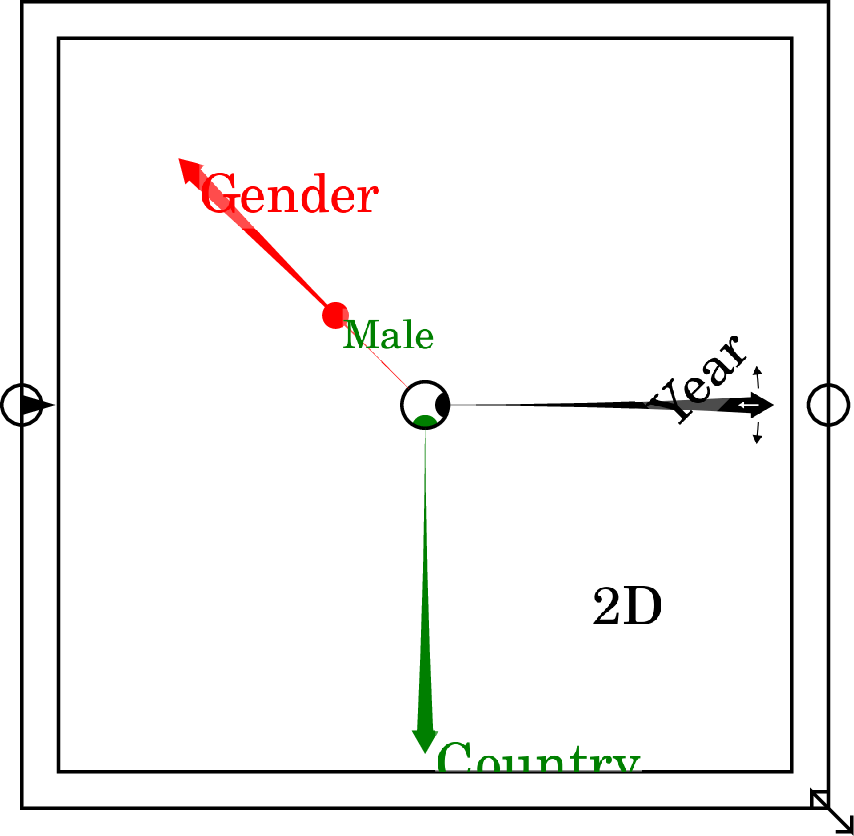
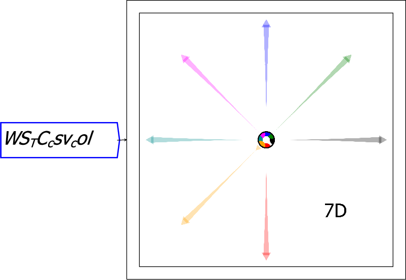
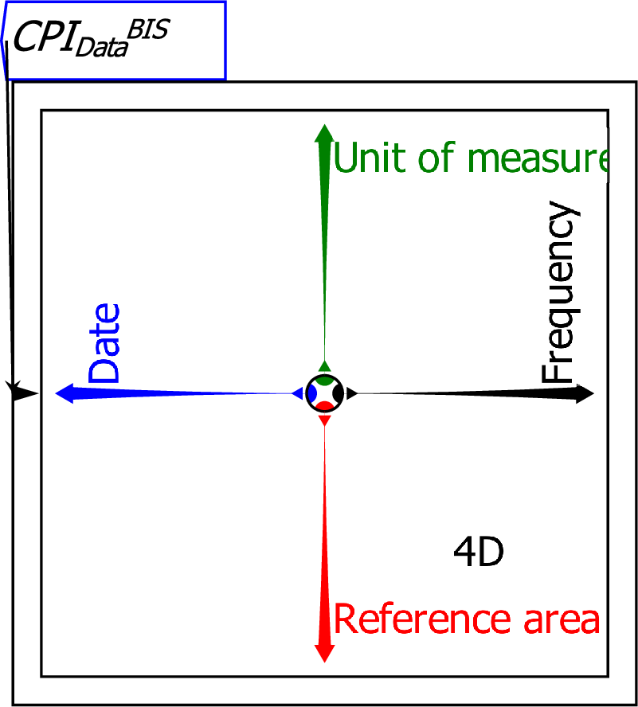
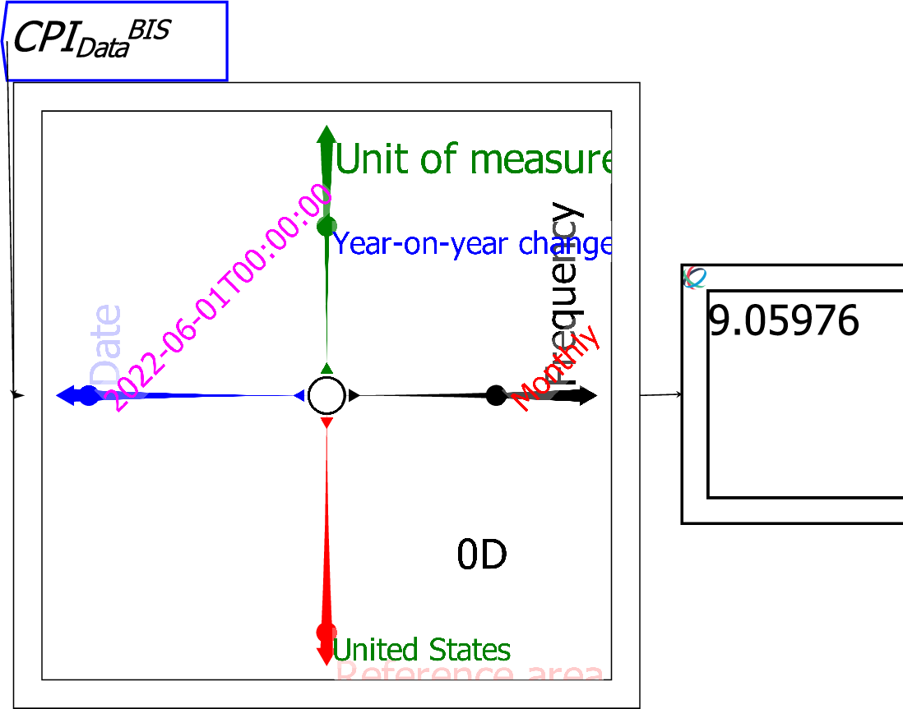
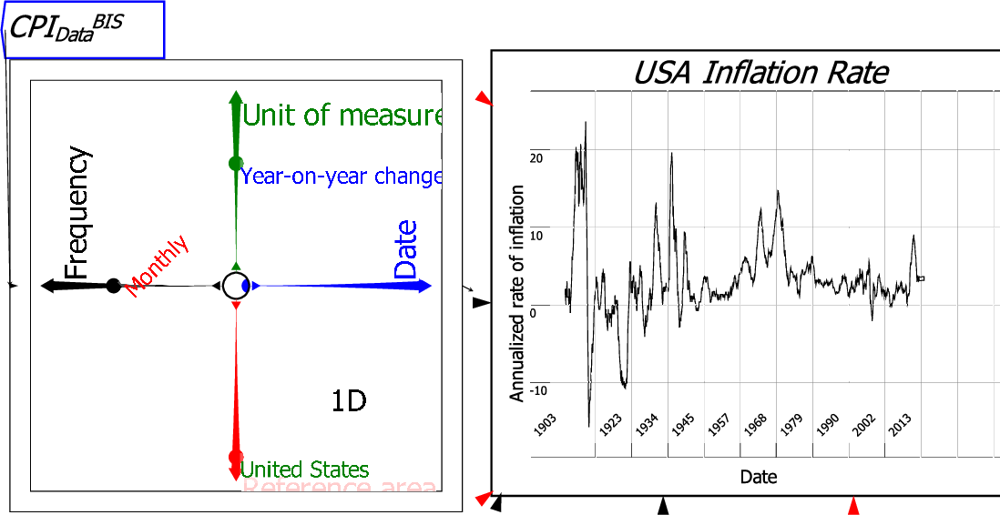
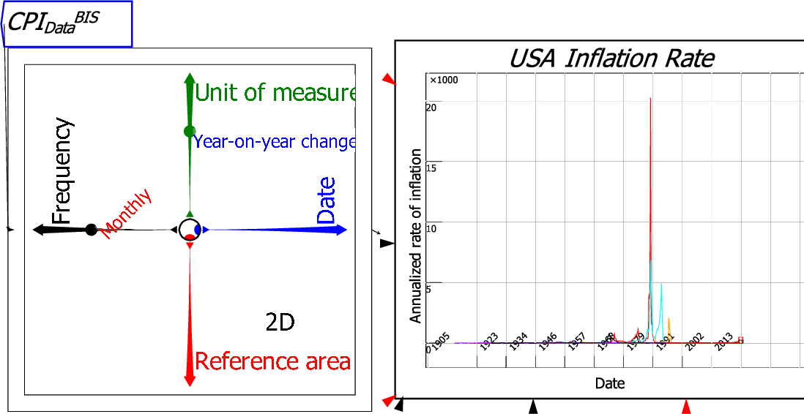
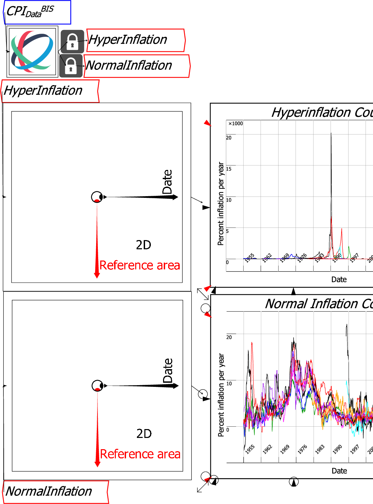
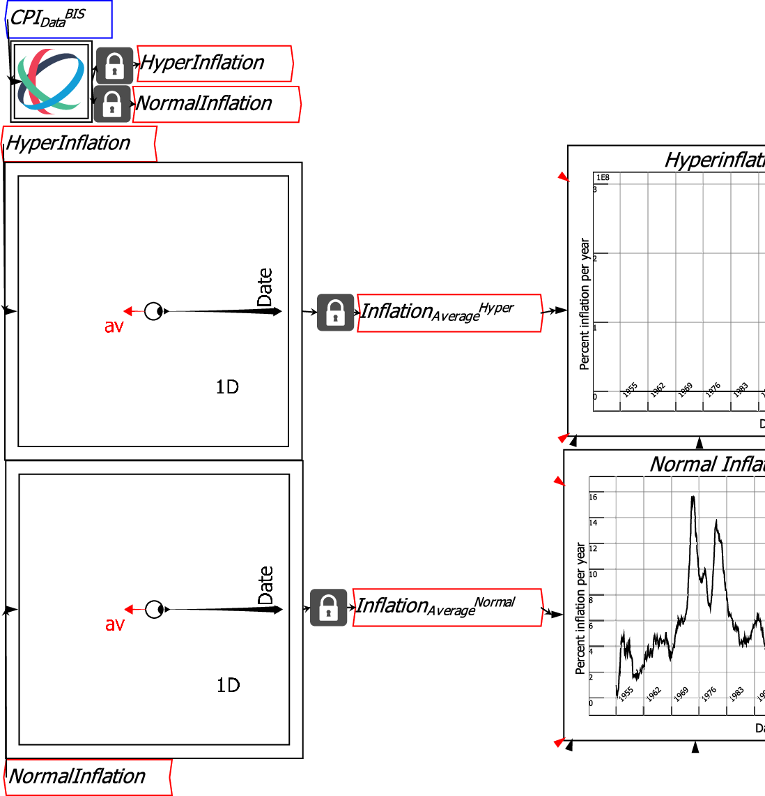

A Ravel is inserted onto the wiring canvas by clicking on the
 widget
from the toolbar. The first Ravel inserted into a document appears
in Edit mode as shown below, with indicative Axis names:
widget
from the toolbar. The first Ravel inserted into a document appears
in Edit mode as shown below, with indicative Axis names:

The essential step in using a Ravel is to attach data to it via the triangular input port. See importing CSV files for how to import data. When a data file is attached to the input port of a Ravel, a multi-arrowed object fills the Ravel rectangle. If there are seven dimensions or more to the data, it will appear as shown below, with arrows in a pastel shade and axes labels not shown unless your mouse is hovering over an axis:
![\includegraphics[width=.7\textwidth]{images/RavelDataImporting01}% WIDTH=389 HEIGHT=268](img259.png)
With six or fewer dimensions it will appear as shown below, with full-colour axes and axis labels shown:

The arrows are the dimensions of the data; the dots are selectors for specific values on each dimension. When a CSV import parameter is first attached to a Ravel, all the selector dots are in the centre of the Ravel, so that all the data in the Ravel is output to any Variable, Sheet or Plot attached to it. The next figure shows all 4 selectors being used so that the Ravel outputs the annualized rate of inflation for the USA in June 2022.

If the selector dot remains in the centre for one dimension, then a column of data for that dimension is output from the Ravel:

With two selector dots remaining in the centre, an array of data is output. This results in multiple countries' inflation rates being plotted:

Clearly a number of countries had extreme rates of inflation at various times between the 1970s and the mid-1990s. There are Ravel functions which can be used to isolate these countries (see Operations), but it is also easy to identify them visually by moving the selector dot along the Reference Area axis. You can do this by either:

This selection employed one context-menu feature of a Ravel--``Pick Axis Slices'' was used on the Reference area axis to choose countries which had annual inflation rate of above 40% between 1955 and 2024--and one Ravel-specific widget, the Lock, which creates a subset of the data which can be allocated to a variable. The selection on the Ravel can then be changed without altering the subset selected by the Lock.
Now that the data is sensibly divided, it is feasible to calculate average inflation rates for normal countries. This is done by choosing ``Av'' on the context menu command ``Set next aggregation'', and then dragging the Reference Area axis in to the centre of the Ravel.

It is now possible to compare the inflation of individual countries to the average for all normal inflation countries. In the next figure, the USA and Japan were selected using Pick axis slices, and their data is graphed against the average. This shows that Japan's inflation rate exceeded America's--and the average--until 1975, after which Japan's inflation rate has been consistently lower than that of the USA and the average.
